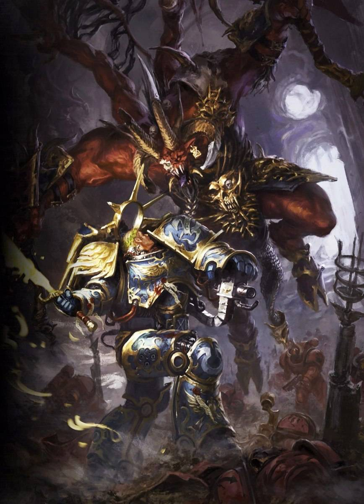
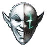
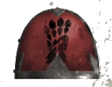
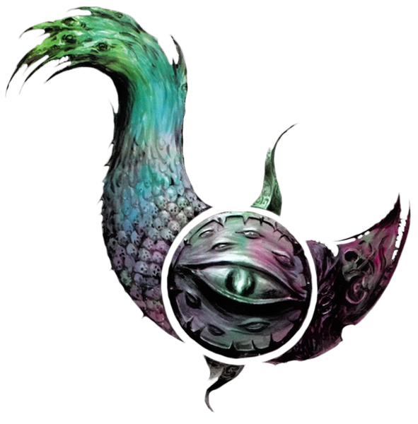

Terran Crusade
| Terran Crusade | |
|---|---|
| Part of the opening of the Era Indomitus | |
 The Lord Commander fighting the Bloodthirster Skarbrand in the heart of the Blackstone Fortress Artwork © Games Workshop | |
| Date | 999.M41[a] |
| Location | Ultramar, the Maelstrom, a hidden Blackstone Fortress, the Webway, Luna and Terra |
| Result | Imperial victory. Guilliman reaches Terra, meets the Emperor and resumes the office of Lord Commander of the Imperium; the Luna Webway gate is sealed; the Indomitus Crusade is proclaimed |
| Belligerents | |
| Imperium and allies  Harlequins[b] | Chaos  Red Corsairs Daemons of Tzeentch |
| Commanders and leaders | |
| † Killed in action | |
| Strength | |
| Casualties and losses | |
The Terran Crusade was the journey of the primarch Roboute Guilliman from Macragge to Terra in 999.M41, shortly after his restoration to life. Guilliman set out to consult the Emperor of Mankind on the state of the Imperium he had found on waking. His fleet was thrown into the Maelstrom by his brother Magnus the Red, captured by the Greater Daemon Kairos Fateweaver, and imprisoned in a Blackstone Fortress held by the Red Corsairs. Freed by the Fallen Angel Cypher and the Harlequins, the survivors fought their way through the Webway, defeating the Bloodthirster Skarbrand, and emerged on Luna, where they drove back the Thousand Sons and sealed the gate behind them.[2][3]
On Terra Guilliman was admitted alone to the Emperor's throne room and remained there for a full day. When he came out he summoned the High Lords of Terra, took up again the office of Lord Commander of the Imperium that he had held after the Horus Heresy, and announced the Indomitus Crusade. Imperial historians treat his arrival on Terra as the true beginning of the Era Indomitus.[2][4]
Background
[edit]Guilliman had lain in stasis in the Temple of Correction on Macragge since the Battle of Thessala in 121.M31, poisoned by the blade of Fulgrim. After the Fall of Cadia in 999.M41, the survivors of the Celestinian Crusade, led by the living saint Celestine, Inquisitor Katarinya Greyfax and Archmagos Dominus Belisarius Cawl, were brought to Macragge through the Webway by the Ynnari prophet Yvraine. While the fleets of Abaddon the Despoiler attacked the world, Yvraine and Cawl restored the primarch to life, Yvraine by the power of the Aeldari death-god Ynnead and Cawl by the life-sustaining Armour of Fate.[1][5]
Guilliman broke the siege of Macragge and, over some seven months, cleared Ultramar of the forces of Chaos. In that time he studied the history of the ten thousand years he had missed. The Imperium he found was a theocracy, ruled by fear and ignorance, that worshipped his father as a god against his father's own teaching. He was close to despair, and resolved to go to Terra and stand before the Golden Throne to learn what the Emperor wished.[2]
Course of the crusade
[edit]Departure and the Maelstrom
[edit]Guilliman gathered every force that could reach Macragge through the worsening Warp: his own Ultramarines under Captain Cato Sicarius, contingents of a dozen Chapters, the Grey Knights of Grand Master Aldrik Voldus, the Black Templars of Marshal Marius Amalrich, the Emperor's Champion, and Celestine, Greyfax and Cawl. He left the defence of Ultramar to Chapter Master Marneus Calgar.[2]
As the fleet passed near the Maelstrom it was intercepted by Magnus the Red, who had lately struck at Fenris and now came to stop his brother. The Crimson King worked a ritual that tore the fleet from realspace and cast it into the Maelstrom. For months the crusade wandered from daemon world to daemon world, losing ships to every crossing. The Ultramarines' records describe Guilliman in this period as burdened by guilt, a weakness the daemons of the Maelstrom learned to use.[2]
Captivity
[edit]
A psychic message from the Farseer Eldrad Ulthran gave the fleet a chain of landmarks to follow to the Maelstrom's edge. There, at a graveyard of wrecked ships, the crusade was ambushed by the Red Corsairs and Kairos Fateweaver, a Lord of Change whom Abaddon had bound and sent to stop the primarch. Fateweaver bound Guilliman in chains formed from his own guilt and forced the fleet to surrender by threatening his life. The prisoners were taken to a Blackstone Fortress hidden in the Maelstrom, held by the Red Corsairs lord Verngar the Apostate, where Fateweaver meant to leave Guilliman to rot.[2]
The Blackstone Fortress
[edit]The Fortress was then attacked by Skarbrand the Exiled One, a Bloodthirster who had come for the primarch's skull. In the confusion Cypher, the hooded Fallen Angel, and the Shadowseer Sylandri Veilwalker of the Masque of the Veiled Path reached the cells. Cypher freed Guilliman on condition that he would be brought before the Golden Throne. Veilwalker's dance broke Fateweaver's sorcery and the crystal fetters shattered.[2]
With their ships lost, the Imperials had only one way out: a Webway gate at the heart of the Fortress. They fought through its corridors against Red Corsairs and daemons of both Khorne and Tzeentch, assisted at one point by warriors of the Legion of the Damned. At the heart of the Fortress Skarbrand fell on them. Marius Amalrich fought the daemon alone and was killed, but his Black Sword left a deep wound. Guilliman then fought Skarbrand in single combat while the daemon's rage overcame his own warriors, and at last threw him from the platform with his body torn apart.[2][j]
The Webway and Luna
[edit]Veilwalker led the survivors into the Webway toward a forgotten spar that ended on Luna, Terra's moon. Magnus had foreseen their road. The Thousand Sons harried the crusade through the Labyrinth Dimension, and as the gate opened on Luna's Mare Tempestus the Crimson King's Legion came through behind them, meaning to fall on the Throneworld itself.[2]
The Battle of Luna was fought among the macrohives and scrapyards of the moon. Guilliman was joined by Imperial Fists from the Sol defences, a cadre of the Sisters of Silence and warriors of the Adeptus Custodes. When Magnus stepped through the gate in person, the primarch fought him and, with the Harlequins and the null-maidens beside him, drove him back through. The gate was sealed permanently so that it could never again be used against Terra. Cypher's dark-armoured companions fought with the Imperials throughout.[2][6]
Arrival on Terra
[edit]
The survivors were carried from Luna to the Eternity Wall spaceport by an aquila lander of the Custodes under Shield-Captain Ty Adronitus, and from there in procession to the Imperial Palace. Billions watched them pass. Guilliman's own account records his shock at what Terra had become: its oceans gone, its surface buried in gothic construction, its people queuing for generations before the offices of the Administratum.[2]
At the door of the throne room the Aquila Commander Kalim Varanor ruled that the primarch alone might enter. Guilliman ordered Cypher and his warriors arrested; he had recognised the sword on Cypher's back. The Fallen Angel submitted, and a few hours later escaped from a warded prison block without trace. Belisarius Cawl exchanged coded words with a Martian priest at the door and left at once for Mars.[2][6]
Guilliman passed alone into the throne room. He remained there for one full day. No record of what passed between the primarch and the Emperor has been made public. When he came out he called an immediate assembly of the High Lords.[2]
Aftermath
[edit]In the days that followed, Guilliman addressed the Senatorum Imperialis, claimed the Emperor's mandate, removed several High Lords from office and replaced them with his own appointees. He warned the council of a Warp disaster spreading across the galaxy; the astropathic reports that arrived soon after, of the Great Rift and the Noctis Aeterna, bore him out. He announced that new armies would be raised, new fleets built, and that Cawl's forges would bring forth new warriors, the Primaris Space Marines. Soon after, the Warp storm that had followed him reached Terra, and he defeated a Khornate host at the Lion's Gate of the Palace. Then, rather than defend Terra from behind its walls, he led the Indomitus Crusade out into the galaxy.[2][3]
The companions of the crusade went their separate ways at the Palace. Celestine left to carry her blessing to the war zones; Greyfax went to report to her Ordo. The survivors of the Black Templars carried Amalrich's Black Sword home.[2]
Legacy
[edit]The Terran Crusade is remembered in the Imperium as a pilgrimage as much as a campaign. The Ecclesiarchy's account treats the primarch's journey through the Warp as a trial set by the Emperor, and his audience as a revelation; the Lord Commander has never confirmed either reading. Among the Ultramarines, the names of those who fell on the road are kept in the Temple of Correction. Inquisitorial studies of the campaign note how many of its outcomes turned on the aid of xenos and of the Fallen, and the question of what Cypher sought at the Throne remains unanswered.[2][4]
See also
[edit]Notes
[edit]- ^ The voyage lasted some months by the reckoning of the fleet, but time in the Maelstrom ran irregularly and the survivors could not agree on how long they had spent there.
- ^ The Masque of the Veiled Path.
- ^ Estimated; Imperial records give no figure. The fleet was drawn from every force that could reach Macragge.
- ^ The host was at Luna.
- ^ Based on its Blackstone Fortress.
- ^ Khornate and Tzeentchian.
- ^ Every starship, with most of its crews.
- ^ Killed by Skarbrand.
- ^ By Guilliman.
- ^ Ultramarines records say Skarbrand was slain; the Grey Knights hold that a Greater Daemon of his rank cannot be destroyed outside the Warp, and record him as banished.
References
[edit]- ^ a b Gathering Storm - Part Three - Rise of the Primarch (7th Edition), pp. 48-93. Games Workshop.
- ^ a b c d e f g h i j k l m n o p Gathering Storm - Part Three - Rise of the Primarch (7th Edition), pp. 48-93. Games Workshop.
- ^ a b Gathering Storm - Part Three - Rise of the Primarch (7th Edition), pp. 48-93. Games Workshop.
- ^ a b Gathering Storm - Part Three - Rise of the Primarch (7th Edition), pp. 48-93. Games Workshop.
- ^ Gathering Storm - Part Three - Rise of the Primarch (7th Edition), pp. 48-93. Games Workshop.
- ^ a b Gathering Storm - Part Three - Rise of the Primarch (7th Edition), pp. 48-93. Games Workshop.